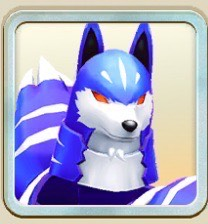

グレイシア

グレイシア
青オーラ
魔族
主血統デュラハン
副血統ライガー
基礎データ
素質
ライフ-5%
ちから+10%
かしこさ-5%
命中+15%
回避0%
丈夫さ+5%
- 素質合計
- +20%
- 最高素質
- 命中 +15%
特徴
ガッツ回復力C
移動速度D
成長タイプ早熟
ヨイワルヨイ
サイズふつう
適性データ
地形適性
砂漠C
森林C
海岸E
雪山C
火山E
- 得意（B以上）
- なし
- 苦手（D以下）
- 海岸E・火山E
間合い適性
遠D
中E
近D
零D
- 得意（B以上）
- なし
- 苦手（D以下）
- 遠D・中E・近D・零D
適性評価は当サイト独自の指標です。B以上は育成でSに届く適性、D以下はSに届きにくい適性として、高いランクを少し重く見て5.0満点で算出しています。
相性のいいアシスト能力
グレイシアはライフの素質が低め（-5%）なので、無垢な寝顔 IIでライフの低さを補おう。命中の素質+15%はグレイシアの強み。ニシキスマッシュ IIでさらに伸ばそう。
-
ニシキスマッシュ II
[前半][魔族]次の効果発動
命中ステータス<+10%>、回避ステータス<+10%>
技命中時、自身に[命中率<+10%>]付与<1回>
[有利]オーラ技発動時、必中Lv3<1回> - ▲ 命中が育ちやすく（素質+15%・6項目で最も高い）、この能力の命中を上げる効果と噛み合う。
-
ホワイトアウト II
[前半][自身青]相手技を回避後、技を回避した回数に応じて次の効果を付与<各1回>
1回：相手に[衰弱Lv3<20秒>]
2回：相手に[暗闇Lv2<20秒>]
3回：自身に[完全回避Lv4] -
俺は喰らう者だ IV
[自身青] R4以上のオーラ技発動時、次の効果が発動
発動技と同じオーラ種の技性能<40%>上昇を付与<各オーラ種毎に1回>
<青>技発動時、[強撃Lv2]を付与<1回> -
俺は喰らう者だ II
[自身青] R4以上のオーラ技発動時、次の効果が発動
発動技と同じオーラ種の技性能<20%>上昇を付与<各オーラ種毎に1回>
<青>技発動時、[強撃Lv1]を付与<1回> -
無垢な寝顔 II
[自身青]バトル開始時に次の効果を発動
最大ライフ+300
[前半]最大ライフ<20%>以上の被ダメ軽減
[前半][有利]追撃無効 - ▲ 素質-5%と伸びにくいライフを、この能力でカバーできる。
※新しいカードの能力から並べています。
評価解説
NPC再生にて入手可能なお手頃デュラハン種グレイシア
配布モンスターなので、間合い適性が全距離D以下。
強力なランク5技を習得するためにも、秘伝で距離を上げることをオススメしたい。
また青オーラモンスターなのに、青オーラ技を一切持たない稀少種として、LMF界では重宝されていると専らの噂（追記：調べたらまあまあいました）
そのため、バトル環境を大きく動かした、MRリムルの『俺は喰らうものだ』を最大限生かしきれない。
それでもデュラハン種の中では、MRクリスの「無垢な寝顔」とMR麻倉葉の「大切なことは心で決める」のおかげで、現状一番長く戦闘に立ち続けることができうる存在である。
グレイシアでワンチャン頂上決戦もいけると思っているので、魔族師匠の実装が待たれる、犬だけに。
最後に、、グレイシアの見た目の既視感、某大人気海賊マンガの砂漠王国に登場したチャカだと判明したときの高揚感は忘れられない。